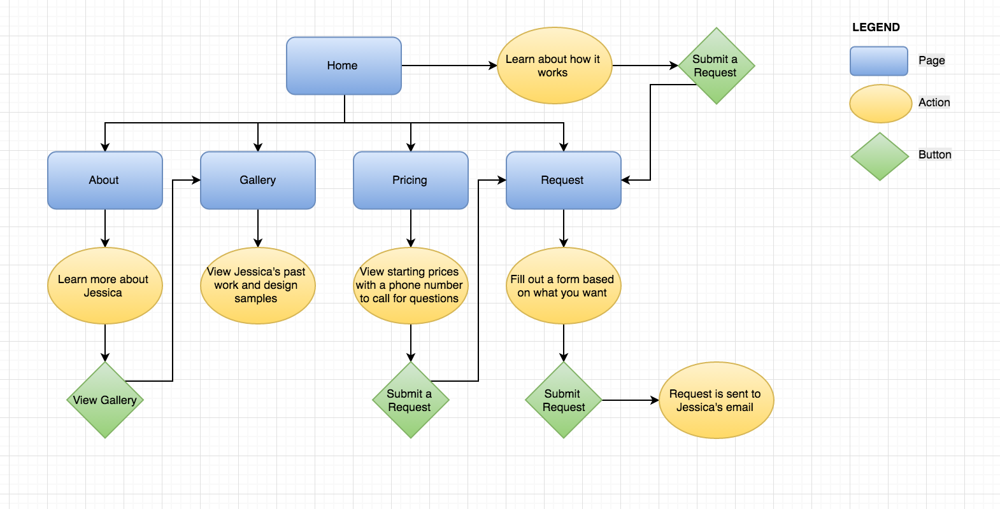
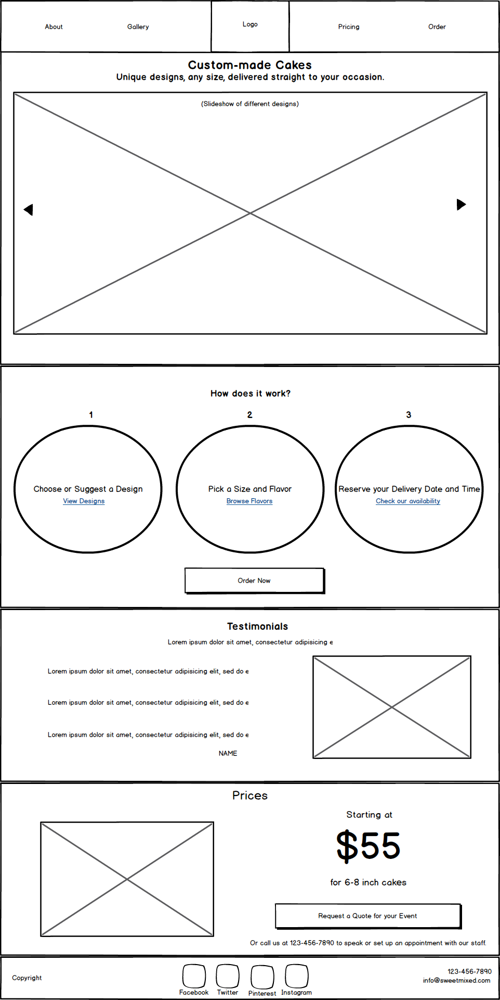
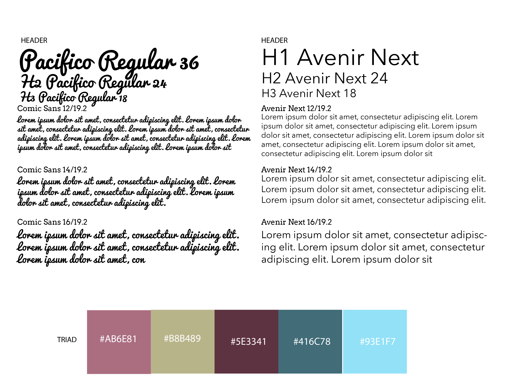
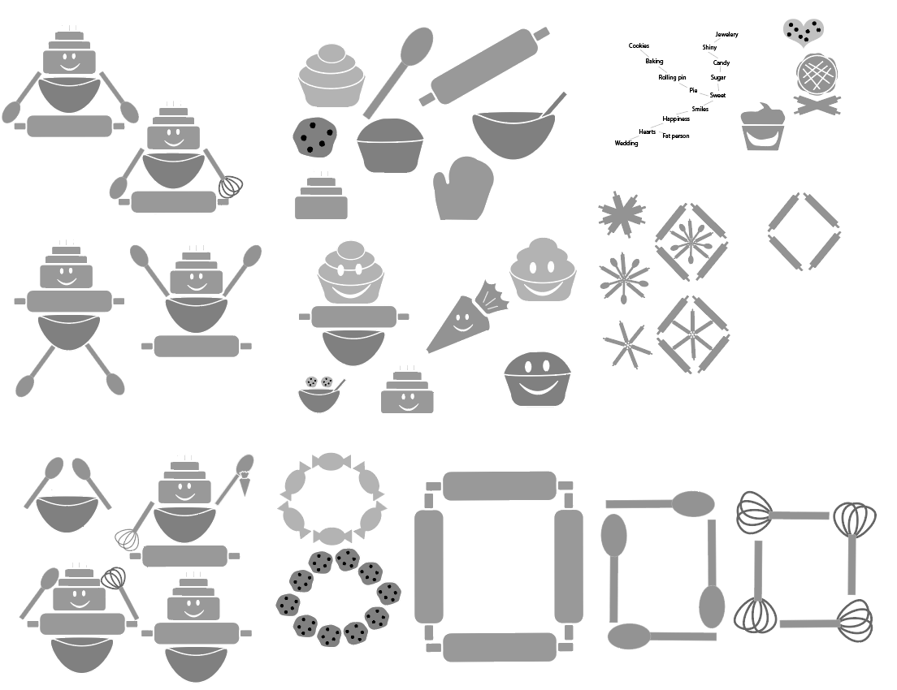
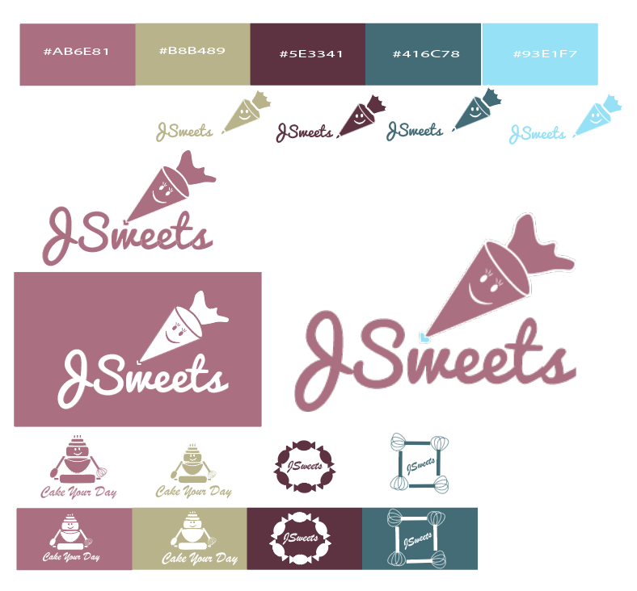
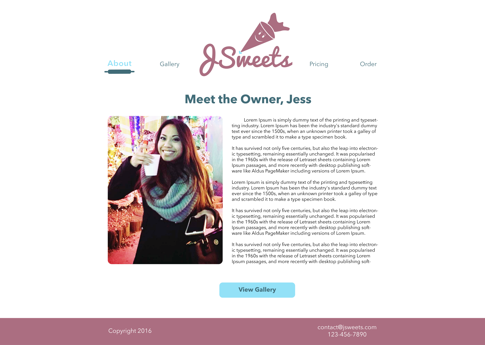
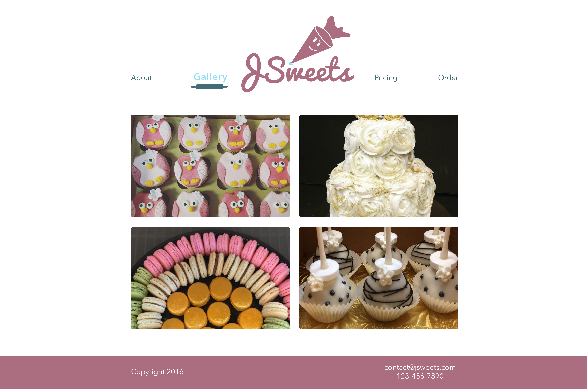
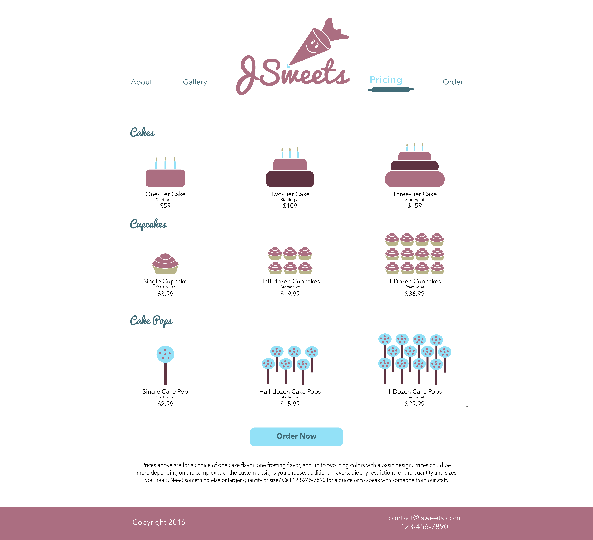

SUMMARY
Baking or picking up a cake can sometimes be a hassle on top of the many things you have to plan for a special occasion. JSweets solves that problem by creating and delivering custom-made cakes straight to your event.
VIEW WEBSITE
EXPLANATION
JSweets was inspired by a pastry chef in Las Vegas, named Jessica, who wants to open up her own cake business in the future. I decided to work with her to showcase her talents designing custom-made cakes and to help her get one-step closer to realizing her dream in owning her own business. For this project, I took on the roles of Project Manager, UX/UI Designer/Researcher, and Front-End Web Developer. Jessica was the client, and I collaborated with her to gather site content and images.
PROBLEM
When I asked Jessica what was stopping her from starting her own business and the biggest challenge she faces as a pastry chef, she brought up two things:
- Having a brick and mortar business is costly to start up.
- Customers often come in late or even forget to pick up their cakes, causing bakery workers to stay way past their shifts.
SOLUTION
Design a website where order requests can be done online and provide delivery, setting aside the need for a brick and mortar location and eliminating challenges that customers might have in picking up their orders.
PROCESS/RESEARCH
To gather ideas on how to design the site, I looked up cupcake shops online. To understand how to competitively price cakes, I also called bakeries directly in Las Vegas and Southern California as those are the areas Jess will be planning on starting her business. Most importantly, I consulted with Jessica on cake prices based on the bakeries she has worked for.

Findings
I found the average starting cost for cakes ranged between $55-$65 for a single tier custom designed cake. Cupcakes ranged from $2.99-$4.50 each, and cakepops ranged from $1.95-$3.50. Popular flavors were vanilla, chocolate, red velvet, and black and white. Leading events for cake orders were Birthdays, Weddings, Bridal Showers, and Baby Showers. Cake toppings were usually frosting or fondant. This information helped us in formulating the pricing and request pages.
Site Map

Wireframes
It was important to convey on the home-page that making custom-made requests would be easy and that cakes were going to be delivered directly. Therefore, I decided to highlight a 3-step process on how to request a design and have it be delivered. Users would simply pick out a design, select a flavor, and provide a delivery date. Two call to action buttons on the home-page allows users to submit a request if a user has an intent to order, or request a quote if they are just shopping around.
Landing Page
BRANDING & IDENTITY
Color Scheme & Typography
Cute, light, and friendly were things that Jessica wanted to convey about her business. Therefore, I decided on a color scheme consisting of different shades of pink and lighter blues.

Typography
A simple typeface that offered curves to convey a feel of bubbliness and friendliness was important, so I chose Avenir Next for the headings, text, and paragraphs. It offered a nice legibility for font-sizes 14-36 pixels, which were the ranges used for paragraphs, labels, and headings. For the logo, I chose Pacifico Regular as it offered a nice blend and transition to cursive from print of Avenir Next. Its smooth and flowy curves worked well in line with the curves of Avenir Next, maintaining the bubbly and friendly look needed for the site to convey.
Logo
Designing a cute, fun, and happy logo that would represent things being custom-made was something important to Jessica. I started with a mind-map to help me come up with ideas, and had Jess get involved by sending me her own doodles as well.

I originally came up with various options, from a cake-bot, to just a rolling pin. The cake-bot appeared too busy and the rolling pin was too simple, but in the end I came up with a smiling frosting dispenser, as it was representative of something being custom-made, cute, fun, and happy.


Mockup
Home

Offering an About Page with Jessica’s bio is important so users know this is a real business with a real person designing their cakes. Getting to know Jess on the website is also necessary for users to build trust with the business. A call to action to view different designs from the about page offers a smooth transition for the reader to view some of Jessica’s work.
About
Gallery
A pricing page that offers starting costs gives a user an overview of what they might spend on an order, and a call to action to submit a request offers makes it easy for a user to reach out when they are ready to make a decision. A phone number is also provided at the bottom of the home page incase a user decides they want to speak to someone directly for any questions.
Pricing
Due to the time required to provide a proper quote for a custom cake, a request page made more sense than an order page. The request page gathers a customer’s event information, cake requirements, and contact information to expedite the quoting process. This way, with all information gathered, all Jessica would need to do is get back to the customer with a quote and gather payment information over the phone.
Requests

Development
Due to the simplicity of the website having only 5 total pages, I decided to code everything in HTML, CSS, and JQuery using Brackets text editor. I used a JQuery plugin for the gallery photo slider for ease. The site is currently hosted on Github until Jessica is ready to launch her business with her own domain.
VIEW THE WEBSITE.
CONCLUSION
After sharing the project and gathering feedback from potential users, the idea of having a custom-made cake business delivered to events were well received. Users had a positive response to Jessica’s designs and several asked if delivery would be available in their respective areas. Unfortunately, the business is intended to start only in Las Vegas at this time.
Due to this response, however, I have learned that this has potential to become a nation-wide custom-made cake and delivery business with very little use of brick and mortar in several locations. All Jessica would need now is to find a coworking-space with a Department of Health approved kitchen to bake her cakes. Jessica also has the option of renting kitchen space from an existing bakery if a coworking space with an approved kitchen is not readily available. A Department of Health approved vehicle that meets temperature and storage requirements to transport food is also necessary. For out-of-state orders, one option discussed with Jessica is to outsource orders to other bakeries for areas outside of Las Vegas, but this would take-away from her original designs that another bakery may not be able to provide.
In future revisions, until Jessica is ready to launch her business, I plan to redesign the gallery page and identify a faster way to populate the photo sliders. Currently, they upload very slowly. I would also work on an order page that would immediately provide cake quotes depending on the selections made with cake size, flavors, and specific ingredients. This would require more time to set up code,, but would eliminate the request page entirely. This would also require Jessica to gather and provide more information on specific quotes and pricing based on a combination of different ingredients.